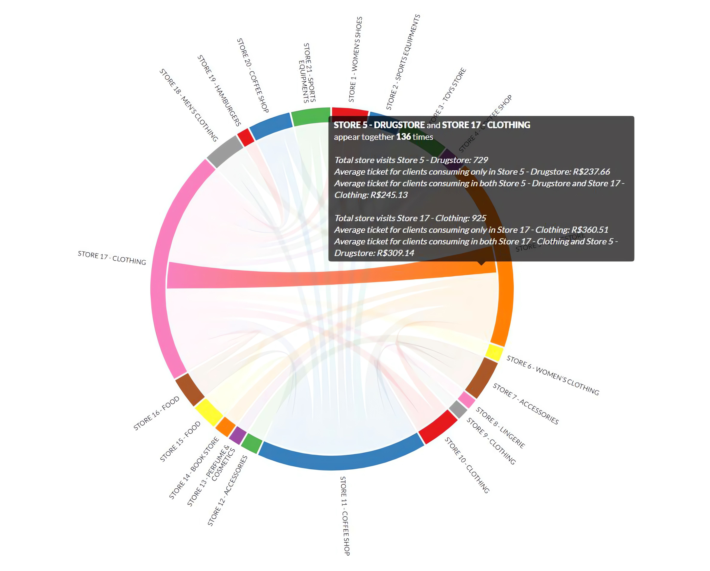

Customer Behavior with Apriori Analysis

During a promotional event, a shopping mall offered customers the chance to win prizes by submitting their purchase invoices. This provided a rare opportunity to access transactional data across different stores within the mall, since purchases usually happen directly at individual retailers. With this data, we can understand how customers move through the mall during the campaign and uncover patterns that help tailor future promotions.
I applied Market Basket Analysis techniques, similar to how retailers find associations between products bought by the same client. Instead of products, I focused on pairs of stores that customers visited on the same trip. Using Python and the mlxtend library, I implemented the Apriori algorithm to identify frequent store pairs based on a minimum support threshold.
The algorithm provides us with a table of frequent patterns, including metrics such as support (how often a pair occurred) and confidence (the likelihood that a customer who visited one store also visited the other). To make the results more accessible for all stakeholders, I created a Chord diagram to simplify the visualization of store pairs and their relationships. This allowed the users to easily see with stores combinations were most common and which pairs had the highest impact on total visits and upselling opportunities (where customers spent more when visiting both stores).
These insights are invaluable for the operations and marketing department of the malls, allowing them to make more data-driven decisions about the store mix and strategies to encourage additional spending for the upcoming campaigns.
You can read more about this analysis in the Investor Relations report this project was showcased in the Earnings Release 4Q20 (page 14) [direct link to the PDF].